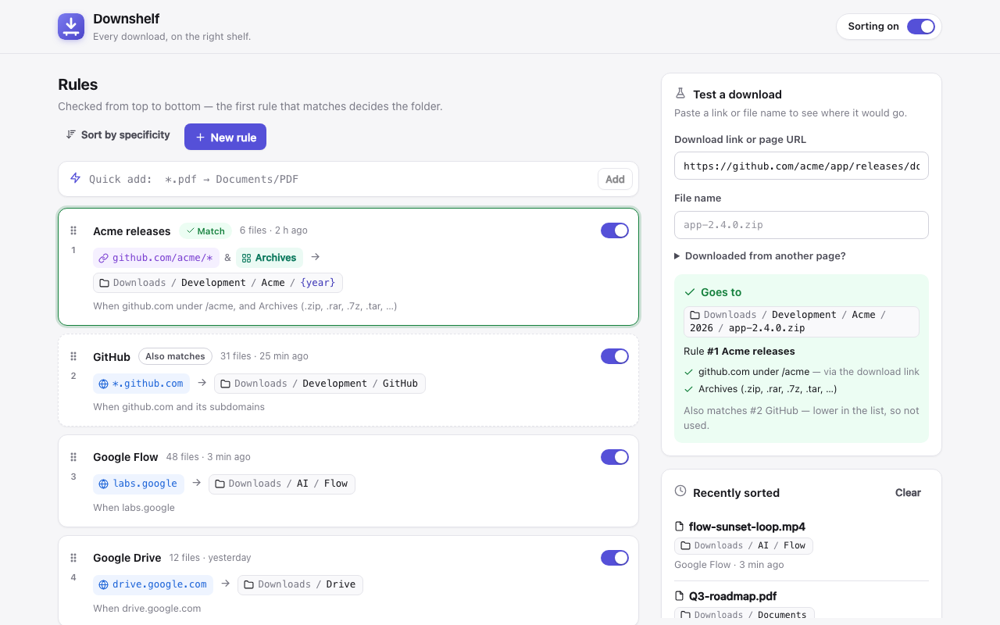
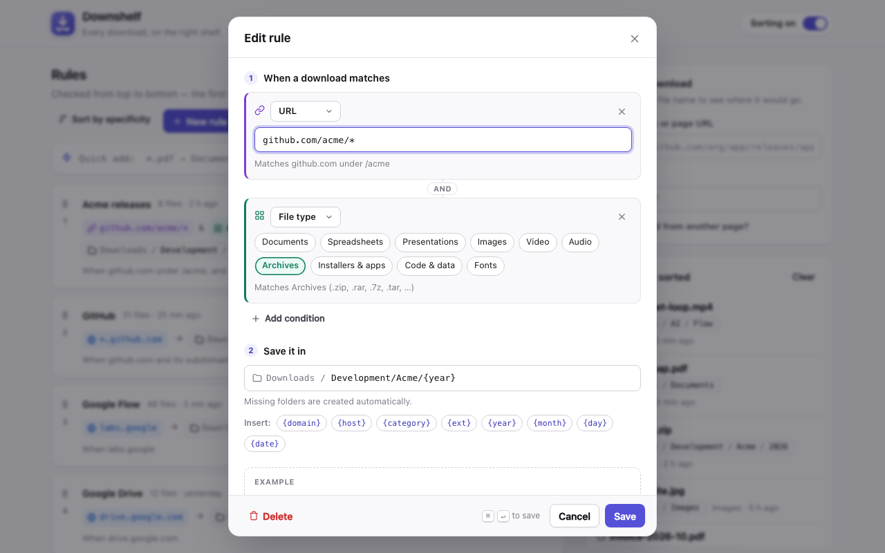
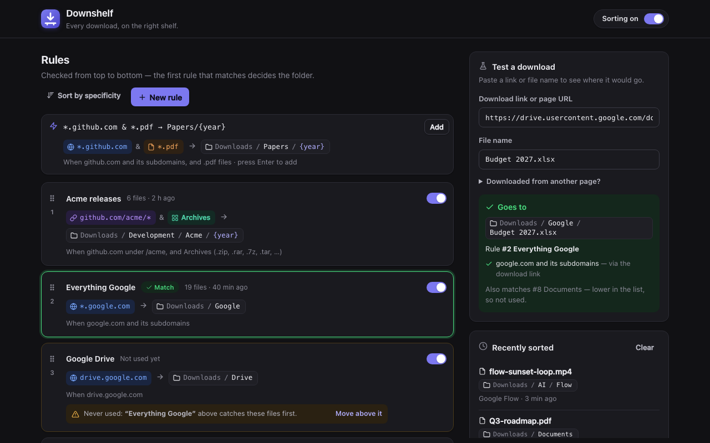
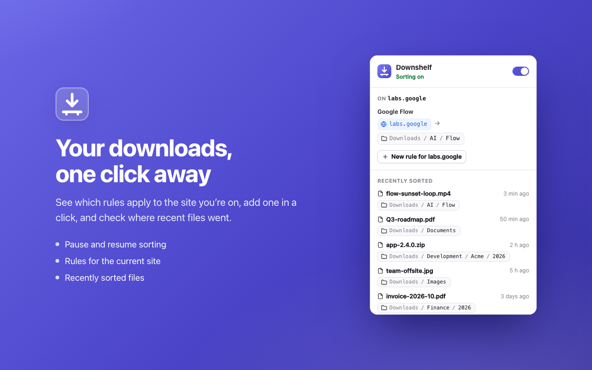

Every download,
on the right shelf.
Downshelf files each download into the right folder the moment it arrives — by website, link, file name or file type. No more digging through a messy Downloads folder.

Write a rule. Downloads follow it.
Each rule says what to match and which folder to use. Rules are checked from top to bottom, and the first match decides — just like email filters.
- github.com/acme/*→Development/Acme
- *.github.com→Development/GitHub
- labs.google→AI/Flow
- invoice-*, receipt-*→Finance/{year}
- *.pdf→Documents/PDF
Simple enough to set up in a minute.
Match on anything
Websites and subdomains, a section of a site, file names with wildcards, or whole file types like images, archives and installers.
Predictable priority
Drag rules to reorder them. New rules are placed above broader ones, and Downshelf warns you when a rule can never fire.
Test before you trust
Paste any link or file name to see exactly where it would go, which rule matched, and why.
Quick add
Type *.pdf → Documents/PDF and press Enter. Combine conditions with &.
Smart folders
Use {domain}, {year}, {category} and more to build folders automatically.
Private by design
No account, no analytics, no network requests. Your rules stay on your computer.
Clear at every step.



Works with Chrome, not around it.
Chrome lets extensions choose folders inside your download location, so Downshelf creates subfolders there. Want files somewhere else? The guide shows two simple ways to set that up yourself.